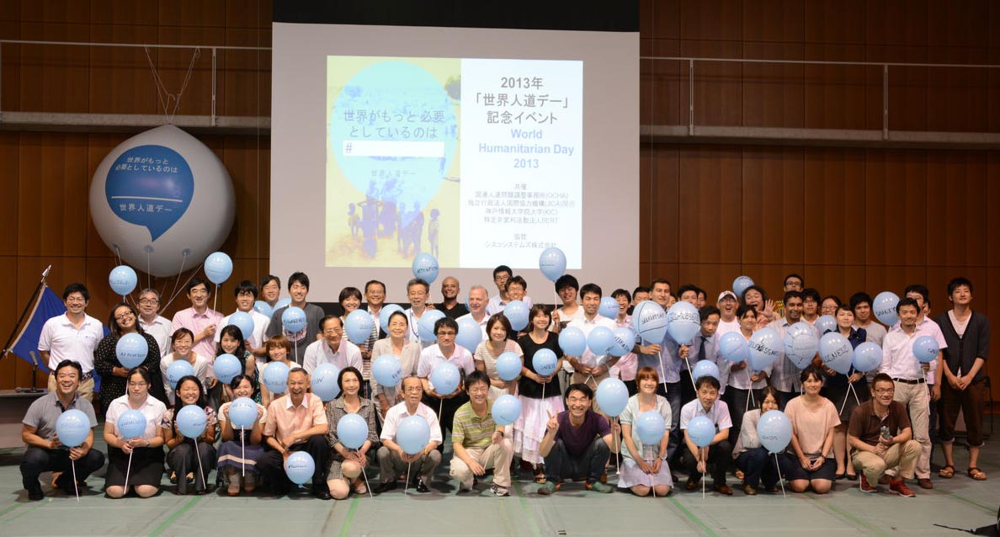
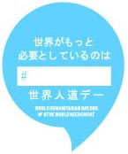

世界人道デー2013：キャンペーン開始！

国連は、毎年8月19日を「世界人道デー(World Humanitarian Day)」として、世界各地で紛争や自然災害などによって引き起こされている人道問題に焦点をあて、被災地の現場で緊急人道支援に携わる人々に思いを寄せるための日と定めています。
今年の「世界人道デー」を迎えるにあたって、ヴァレリー・エイモス人道問題担当国連事務次長が以下のメッセージを寄せました。「世界がより大きな人道精神(ヒューマニティー)を必要としているのは明らかです。今年、世界各地で7,000万人以上が支援を必要としています。世界の人道ニーズが拡大の一途をたどっている今、こうしたニーズに応えるため、新たなパートナーが参加し、支援の輪を広げてゆかねばなりません。このキャンペーンはまさにこうしたことを実現するチャンスなのです。」(メッセージビデオ>>)
今年の8月19日には、国連機関や民間団体が中心となって、世界50箇所以上で様々な関連イベントが開催されました。ニューヨークの国連本部では、10年前にバグダッドで起こった国連事務所爆破事件で犠牲となった国連スタッフの遺族を迎え、潘基文(パン・ギムン)国連事務総長主催の追悼行事が行われました。ブラジルのリオデジャネイロでは、同爆破事件で犠牲となったセルジオ・デメロ氏を悼み、その遺志を称える数々の行事がブラジル政府等によって開催されました。
ここ神戸では、国際協力機構(JICA)関西、神戸情報大学院大学(KIC)、NPO法人BERTとの共催で、日本初となる「世界人道デー」記念イベントを開催しました。前半はOCHA神戸事務所長の渡部が登壇し、「世界人道デー」の紹介と今年のキャンペーンへの参加を訴えました。そして「世界がもっと必要としているのは___」と書かれた風船を約65名の参加者にそれぞれ配り、どんな言葉が当てはまるかを議論。最後に #Safety や #Communication などグループ毎で選んだ言葉を書き込んで掲げました。後半は、人道支援に役立つ情報通信技術(ICT)に焦点をあて、KIC福岡副学長が安否確認のスマホアプリを用いたデモンストレーションを行いました。加えて、現在もさまざまな困難に直面しながら現地で活動を展開しているJICAイラク事務所からのメッセージも紹介されました。
8月19日を皮切りに9月24日までの約1ヶ月間、全世界で「世界人道デー」キャンペーンが展開されます。「言葉を、行動に」を合言葉に、キャンペーンサイトやソーシャルメディアを通じて、誰もが、いつでも、そしてどこからでも参加できる人道支援を目指しています。
具体的には「世界がもっと必要としているのは___」(The World Needs More ___)に続く言葉を、企業や著名人などにスポンサーして頂いています。そして皆さんに共感する言葉をツイッターやフェイスブックなどで広めて頂くことで、その広がり度合いに応じて、世界各地で緊急人道支援のために国連が運営している基金に各スポンサーからの資金提供が行われる仕組みとなっています。
また今年のキャンペーンを盛り上げるため、アメリカで人気の子どもキャラクター、キッド・プレジデント君の全面協力を得ました。(キッド・プレジデント君予告ビデオ>>)昨年のキャンペーンの立役者、歌手のビヨンセさんや潘基文(パン・ギムン)国連事務総長などにインタビューするなど大活躍です。(ビヨンセインタビュー>>)
具体的には、キャンペーン公式サイトから投票する方法と、皆さん1人1人が選んだ言葉をソーシャルメディアを使って拡散する方法の2種類があります。キャンペーンサイトを通じた参加方法は以下の通りです。
1. キャンペーンサイトにアクセス
2. HOME のページをスクロールダウンして、大きな青いふきだしの矢印を左右にクリック。自分が共感できる言葉を選ぶ。
3. その言葉のスポンサーとなっている企業に寄付をしてもらうなら、左側の#Share(シェアする)をクリック。するとフェイスブックもしくはツイッターが選べる。
4. こうして1回シェアされるごとに、スポンサー企業から国連の基金に1ドルが寄付されます(ツイッターはリツイートもカウント)。
5. もし自分自身がその言葉のスポンサーとして募金をするなら、右側の＄Donate(寄付する)をクリックし、支払い画面へ。
6. 集められた募金は国連人道機関や民間団体による支援活動に直接充てられます。
またTwitterなどソーシャルメディアでの拡散による参加方法は、以下の通りです。
1. #WorldNeedsMore を入力。
2. 続けて#(ハッシュタグ)のあとに自分の選んだ言葉を続ける。
(例: #WorldNeedsMore #Kizuna)
上記の２種類の#(ハッシュタグ)を記載し、SNSでシェアをすると1カウントとなります。まだスポンサーのついていない言葉でも今後サポーターがつく可能性もありますので、気に入った言葉はどんどんシェアして下さい。あなたのシェアが、あなたのつぶやきが、人々を助けるための資金源となり、いのちを救う力になります。
今年、人道支援のために必要とされる総額約130億ドル(日本円で1兆3,000億円)のうち、7月時点でその40％程度しか集まっていない状況です。世界中の人々がいのちをつないでいくための支援を実現するため、今年の世界人道デーキャンペーンへの皆さんの幅広いご参加をお願いします。